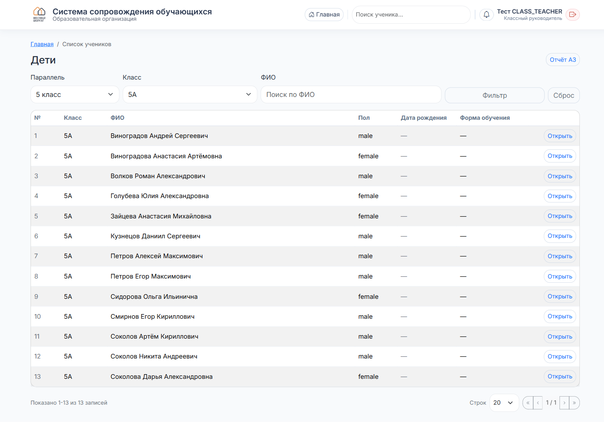
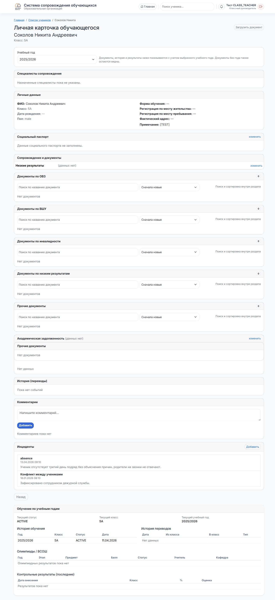
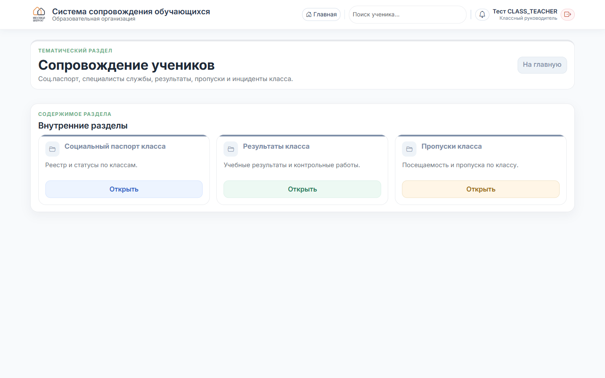
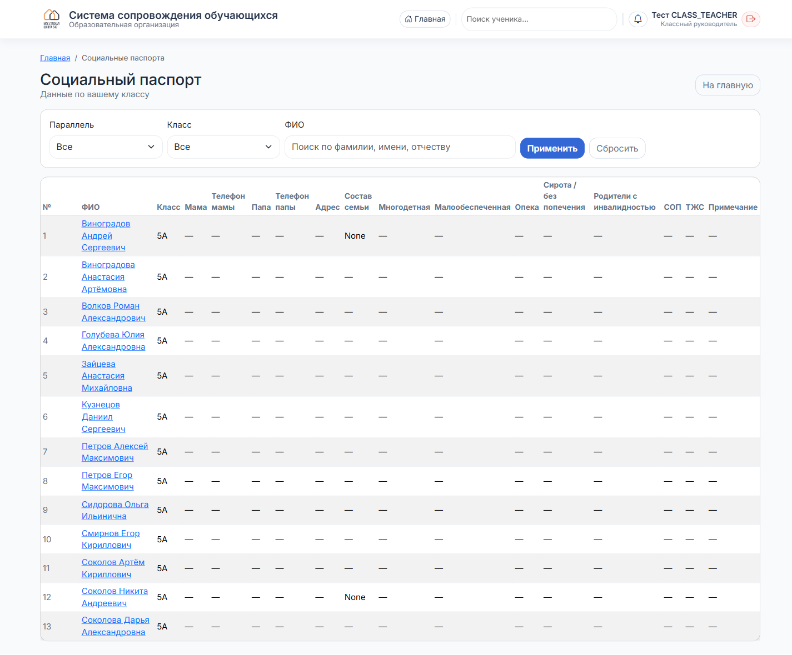

Список учеников, личные карточки, соц. паспорт ученика и соц. паспорт класса.
На главной кликните плитку «Мой класс». Откроется список ваших учеников с фильтрами по ФИО.

Справа у каждой строки — кнопка «Открыть». Нажмите, чтобы перейти в личную карточку ученика.
В карточке — всё про ребёнка в одном месте.

Основные блоки:
Внутри карточки ученика найдите секцию «Социальный паспорт» и нажмите «Изменить» в правом верхнем углу секции.
Заполните поля: телефоны родителей, состав семьи, статусы (многодетная, малообеспеченная, опека, СОП, ТЖС и т. д.), адрес, примечания. Сохраните.
На главной → тематический раздел «Сопровождение учеников» → карточка «Социальный паспорт класса».

Откроется таблица по вашему классу. Каждая строка — ученик, все колонки соц. паспорта рядом. Видно, где данные заполнены, где прочерк.

Кликните на ФИО ученика, чтобы перейти в его карточку и дозаполнить.
В том же разделе «Сопровождение учеников» есть карточки:
Для инцидентов по вашему классу — плитка «Мои заявки» на главной показывает то, что подавали вы. Общий реестр событий по классу — у психолога/соц. педагога.